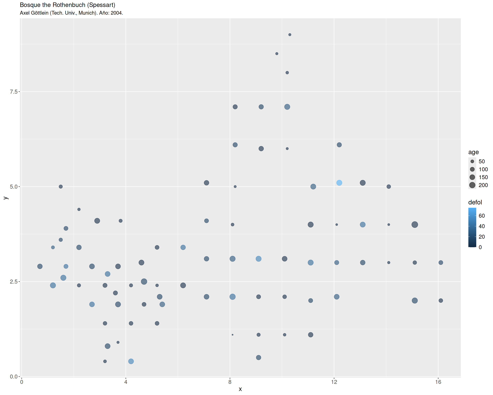

En este capítulo presentamos algunas herramientas básicas de visualización en R, que se pueden aplicar a la creación de gráficos con datos espaciales.
3.0.1 Datos de ejemplo
Utilizaremos un dataset de ejemplo del paquete R agridat(Wright, 2024), que contiene conjuntos de datos provenientes de publicaciones relacionadas con la agricultura, incluyendo cultivos de campo, cultivos arbóreos o estudios con animales, entre otros.
También usaremos un dataset de ejemplo de un completo libro sobre métodos de regresión, ya en su segunda edición (Fahrmeir et al., 2022). Los archivos con los datasets de ejemplo de esta referencia se pueden descargar de su página web, así como también los archivos de código con los modelos sobre estos datos, en R.
Paquete agridat
holland.arthropods: Muestreo de diferentes especies de artrópodos presentes en una malla de 30m x 30m de un campo de trigo cerca de Wimborne, Dorest (Reino Unido). Los muestreos se realizaron en 6 fechas entre junio/julio de 1996. Los conteos para cada especie de artrópodo se agregaron sobre los 6 días totales (Holland et al., 1999).
De acuerdo con la información facilitada en (Fahrmeir et al., 2022), este dataset proviene de un proyecto para comprobar las condiciones en que se encuentra el bosque the Rothenbuch (Spessart), realizado por Axel Göttlein (Tech. Univ., Munich) desde 1982. En este caso, las localizaciones de los árboles examinados están mucho más próximas entre sí de lo habitual en los análisis oficiales a gran escala. Se examinaron árboles en 83 ubicaciones diferentes alrededor de la localidad, centrándose en cinco especies: haya, roble, abeto, alerce y pino. El archivo de datos está restringido a la información sobre las hayas. En concreto, cada año la salud de las hayas se categoriza mediante la variable respuesta defoliation (defoliación), medida en 9 niveles diferentes. La interpretación de los posibles valores es que 0% corresponde a un árbol sano y 100% se asigna a un arbol muerto.
Datos mal codificados
El archivo de datos data/beech.raw incluid en el repositorio de este taller, es una copia del archivo original descargado de la página web oficial del libro. Sin embargo, dicho archivo original contiene 3 valores erróneamente codificados (aparece el valor .) para la columna de la variable ph, concretamente en las filas 1678, 1679 y 1797.
Para evitar errores de lectura, se han recodificado esos tres valores como 4. para los ejemplos de este taller. No obstante, se notifica esta modificación a los usuarios/as que estuviesen interesados en utilizar este dataset para otros fines (como practicar modelos avanzados de regresión).
library(Hmisc)
Adjuntando el paquete: 'Hmisc'
The following objects are masked from 'package:base':
format.pval, units
# Para un resumen más completo:# Hmisc::html(describe(beech))
3.1 El paquete ggplot2
3.2 Anatomía de un gráfico con ggplot2
El paquete ggplot2 sigue los principios de la gramática de gráficos que hemos visto en el ?sec-grammar-of-graphics, de forma que nos permite construir un gráfico paso a paso. Para ello se empieza por utilizar la función ggplot():
Indicamos a la función ggplot() los datos que vamos a representar.
Indicamos a ggplot()qué relaciones queremos visualizar.
Elegimos cómo queremos representar gráficamente las relaciones en nuestros datos que hemos indicado en el paso anterior.
Si es necesario, superponemos más elementos gráficos (objetos geométricos o geoms), añadiéndolas a nuestro gráfico una a una.
Incluimos funciones adicionales para ajustar transformar los datos, ajustar o cambiar escalas, añadir etiquetas y título, marcas en los ejes, capas adicionales, etc.
El argumento data = ....El argumento mapping = aes(...).Elegimos una función geom_...() que determina el tipo de gráfico o elemento gráfico.
Veamos estós datos sobre un esquema para hacernos una idea más clara del aspecto que tendrá nuestro código.
1ggplot(data =<DATOS>,mapping =aes(<CONEXIONES>)) +2geom_...(...) +3stat_...(...) +4<FUNCIONES DE ESCALA Y GUÍAS>+5<SISTEMAS COORDENADOS>+6<FACETAS>+7<TEMA>
1
Indicamos qué datos vamos a utilizar y como conectamos esos datos (mapeo) con los elementos estéticos. Esta parte es obligatoria.
2
Añadimos uno o varios objetos geométricos para representar los datos.
3
Transformamos los datos (funciones stat_...()), normalmente resumiéndolos de algún modo.
4
Ajustamos el mapeo de los datos a los elementos estéticos, modificando la escala de representación o añadiendo elementos de guía para intepretar el gráfico (marcas en ejes, leyenda, etc.).
5
Configuramos el sistema coordenado de representación (por defecto se usan coordenadas cartesianas): intercambio de ejes X e Y (función coord_flip()), uso de coordenadas polares (coord_polar()), etc.
6
Decidimos si queremos desglosar el gráfico en varios paneles (facets) para presentar simultáneamente varios subgráficos (como hemos visto, útil para comparar entre grupos, evolución temporal y en otros casos).
7
Por último, podemos elegir un tema preconfigurado que adapta el aspecto de muchos de los elementos del gráfico para conseguir un resultado final más armonizado.
Información adicional sobre ggplot2
Si necesitas más información sobre la utilización del paquete ggplot2 te recomendamos que consultes las siguientes referencias:
Capítulo 5 de nuestro curso previo Visualización de Datos con R, para este mismo programa de doctorado.
3.3 Taller práctico 1: visualización de datos espaciales con ggplot2
Vamos a utilizar el dataset beech, con datos sobre el estado de salud de las hayas cerca de la localidad alemana de Rothenbuch (Spessart), para componer otros ejemplos de construcción de gráficos para visualización de datos paso a paso con ggplot2.
library(ggplot2)beech_years <- beech |> dplyr::filter(year ==1983| year ==1987| year ==1991| year ==1995| year ==1999| year ==2004)p_beech <-ggplot(data = beech_years,aes(x = x, y = y,color = defol, size = age)) +geom_point(alpha =0.6) +facet_wrap(~year, nrow =3) +theme(legend.text =element_text(size =12),legend.title =element_text(size =14),strip.text =element_text(size =12),axis.text =element_text(size =12),axis.title =element_text(size =14), )p_beech

Figura 3.1: Visualización utilizando dos canales y facetas.
Figura 3.2: Visualización utilizando tres canales y facetas.
Fahrmeir, L., Kneib, T., Lang, S., & Marx, B. D. (2022). Regression: Models, Methods and Applicatons (2.ª ed.). Springer-Verlag GmbH. https://doi.org/10.1007/978-3-662-63882-8
Holland, J. M., Perry, J. N., & Winder, L. (1999). The within-field spatial and temporal distribution of arthropods within winter wheat. Bulletin of Entomological Research, 89, 499-513. https://doi.org/10.1017/S0007485399000656